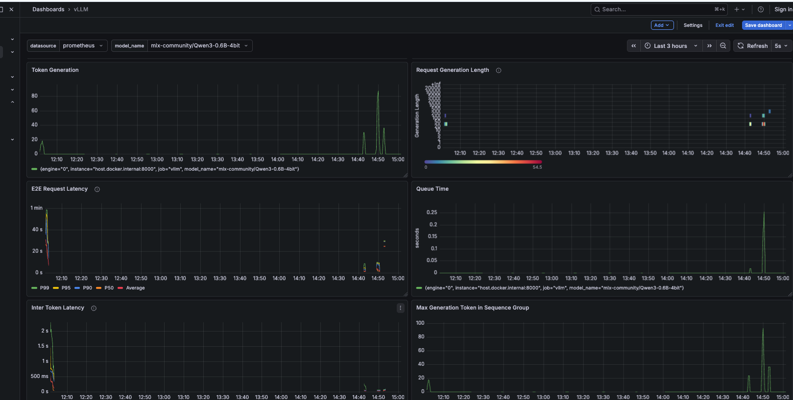
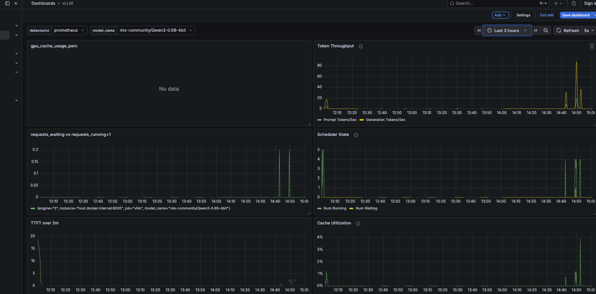
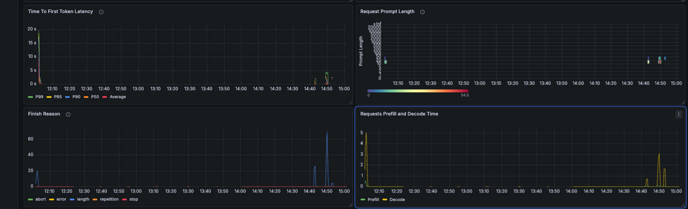

I spent a week running inference experiments on my M4 Mac Mini — not to build a product, but to understand what actually happens inside an LLM serving stack. TTFT. TPOT. KV cache. Continuous batching. These are words I had read in papers. This week I measured them. Here is what I found.
The Setup
I used vllm-metal, the official Apple Silicon plugin for vLLM, serving Qwen3-0.6B-4bit — a 400MB 4-bit quantized model from HuggingFace's mlx-community. Small enough to run comfortably inside 16GB of unified memory, fast enough to produce measurable signal.
vLLM exposes a Prometheus-compatible /metrics endpoint. I wired
that into a Docker Compose stack running Prometheus and Grafana on the same
machine — the same observability pattern I already use for
inference-sentinel.
Everything was visible in real time as I ran experiments.
# One-liner install for vllm-metal (Apple Silicon)
curl -fsSL https://raw.githubusercontent.com/vllm-project/vllm-metal/main/install.sh | bash
source ~/.venv-vllm-metal/bin/activate
# Serve the model — OpenAI-compatible API on :8000
vllm serve mlx-community/Qwen3-0.6B-4bit --port 8000
# INFO: Platform plugin metal is activated
# INFO: Uvicorn running on http://0.0.0.0:8000Understanding the Inference Pipeline
Before I looked at a single number, I needed to understand what I was measuring. Every LLM inference request has two fundamentally different phases, each with its own compute profile:
Input: "What is KV cache in LLM inference?" ← entire prompt
Operation: All prompt tokens processed in parallel → one big matrix multiply
Compute profile: Compute-bound — lots of FLOPs, fast on GPUs
Output: KV cache populated for all prompt tokens
Metric: TTFT — Time To First Token
── DECODE PHASE ───────────────────────────────────────────────────────
Input: Last generated token + entire KV cache
Operation: One token generated per step → sequential, tiny matrix multiply
Compute profile: Memory-bandwidth-bound — must load full KV cache each step
Output: One token → streamed to client → repeat until done
Metric: TPOT — Time Per Output Token
These two phases have completely different resource requirements. Prefill is compute-hungry but parallelisable. Decode is sequential and memory-bandwidth limited. Running them on the same hardware, in the same process, is the fundamental inefficiency that P/D disaggregation — what I will study in Week 2 — exists to fix.
Experiment 1 — Measuring TTFT and TPOT Directly
I wrote a Python script that streams a response and timestamps the first token arrival separately from the inter-token intervals. Here is the core measurement logic:
def measure_streaming(prompt, max_tokens=100):
start = time.perf_counter()
first_token_time = None
token_times = []
# Stream the response — each SSE chunk = one decoded token
with client.stream("POST", "/v1/chat/completions", json=payload) as resp:
for line in resp.iter_lines():
if content := parse_token(line):
now = time.perf_counter()
if first_token_time is None:
first_token_time = now # ← TTFT captured here
token_times.append(now)
# TPOT = average gap between consecutive tokens
intervals = [token_times[i] - token_times[i-1]
for i in range(1, len(token_times))]
avg_tpot = sum(intervals) / len(intervals)I ran this against two prompts: a short one ("What is 2+2?") and a long one — a 500-token document summarisation task. The results were immediately instructive:
The asymmetry is the point. TTFT increased by 42% when the prompt got 25x longer — more tokens to process in parallel during prefill. But TPOT barely moved (3.4ms → 4.2ms) because decode generates one token at a time regardless of prompt length. Once the model starts generating, the input is already in the KV cache and irrelevant to decode speed.
TPOT is determined by model size and hardware bandwidth. TTFT is determined by how long your user made their prompt.
— what the numbers told me
Experiment 2 — Prefix Cache in Action
KV cache stores the computed key-value tensors for each token so they do not need to be recomputed on subsequent steps. Prefix caching extends this across requests: if two requests share the same system prompt, the second request can reuse the KV cache blocks from the first rather than recomputing the entire prompt from scratch.
I tested this by sending three requests with an identical 50-repetition system prompt, measuring TTFT for each:
SYSTEM_PROMPT = "You are a helpful assistant. " * 50 # long shared prefix
# First request — cold KV cache, full prefill required
chat("What is 2+2?", "First request (cold cache)")
# Second request — same system prompt, blocks reused from cache
chat("What is 3+3?", "Second request (warm cache)")
# Third request — same again
chat("What is 4+4?", "Third request (warmer cache)")A 51% TTFT reduction on the second request. The user asking a follow-up question on the same conversation gets their first token in half the time. This is why llm-d's EPP scheduler routes requests with shared system prompts to the same decode pod — to maximise KV cache reuse at the cluster level.
The prefix-cache-aware scorer in the EPP assigns a higher score to pods that already hold relevant KV cache blocks for an incoming request. What I measured locally as a 51% TTFT reduction — that is the per-request benefit the EPP is trying to maximise at cluster scale across dozens of decode pods.
Experiment 3 — KV Cache Pressure Under Concurrent Load
I sent four concurrent requests, each asking for 500 output tokens — a deliberate attempt to fill the KV cache and observe how continuous batching handles memory pressure.
# 4 concurrent requests, 500 tokens each
with ThreadPoolExecutor(max_workers=4) as ex:
futures = [ex.submit(send_long_request, i) for i in range(4)]
# Result:
Request 0: 500 tokens in 24.9s (20.1 tok/s)
Request 1: 500 tokens in 24.9s (20.1 tok/s)
Request 2: 500 tokens in 24.9s (20.1 tok/s)
Request 3: 500 tokens in 24.9s (20.1 tok/s)All four requests completed at exactly the same time. This is continuous batching working correctly. Sequential processing would have taken approximately 4 × 24.9s ≈ 100 seconds. Instead they all finished in 24.9s — the model processed all four sequences in parallel during each decode step.
In Grafana, vllm:kv_cache_usage_perc climbed to 4% during this
test — modest for a 0.6B model. On a 70B model with longer sequences, this
same pattern pushes KV cache utilisation toward the 85% danger threshold where
evictions begin and latency spikes.
Experiment 4 — Load Testing: TTFT Degradation Under Pressure
I used Locust to simulate concurrent users sending a mixed workload of short and long prompts. The Grafana dashboard made the degradation pattern immediately visible.
short_prompt avg=9,471ms min=710ms p50=1,900ms max=23,219ms
long_prompt avg=16,830ms min=3,152ms p50=31,000ms max=30,508ms
── KEY OBSERVATION ──────────────────────────────────────────────────
Long prompt p50 latency: 31 seconds
Under concurrent load, long prompts queue behind each other.
Each long prompt blocks the decode queue while it runs prefill.
This is the problem P/D disaggregation solves.
The 31-second p50 for long prompts is not a hardware limitation — it is a scheduling limitation. When aggregated serving forces prefill and decode to share the same process, a long prefill blocks all decode operations behind it in the queue. Every user waiting for a short response is queued behind whoever submitted the long document.

E2E latency (top left) showing P99 touching 1 minute during load spikes. Queue Time (top right) shows request wait time climbing to 0.25s as concurrency increases. Inter Token Latency (bottom left) starts high then stabilises as the batch warms — classic continuous batching behaviour.
The queue is the bottleneck, not the GPU. The GPU is fast. The waiting is what kills latency.
— what Grafana's num_requests_waiting panel told me
Experiment 5 — vllm-metal vs Ollama Under Load
I benchmarked vllm-metal against Ollama using vegeta at a sustained 3 req/s over 30 seconds. The primary comparison is Ollama qwen2.5:0.5b vs vllm-metal Qwen3-0.6B-4bit — same model family, same approximate parameter count, different serving engines. Mistral 7B is included for reference but is not a fair size comparison.
| Engine | Model | p50 | p95 | Min | Success |
|---|---|---|---|---|---|
| Ollama | mistral 7B (reference only — 10× larger) | 15,979ms | 26,896ms | 5,157ms | 100% |
| Ollama | qwen2.5:0.5b (primary comparison) | 14,062ms | 20,012ms | 2,569ms | 100% |
| Ollama | qwen3.5 (large) | timeout | timeout | 13,039ms | 2.2% |
| vllm-metal | Qwen3-0.6B-4bit (primary comparison) | 6,543ms | 10,952ms | 974ms | 100% |
Against the same-size Ollama model, vllm-metal is 2.15× faster at p50 (6,543ms vs 14,062ms) and 1.83× faster at p95 (10,952ms vs 20,012ms). The minimum latency of 974ms — sub-second — is the clearest signal: when the server is not saturated, continuous batching delivers a first response before Ollama has even started processing. Ollama's 2.5 second minimum reflects its sequential model: each request waits for the previous one to complete before the GPU is available.
The qwen3.5 failure (2.2% success rate) is instructive. A larger model under 3 req/s causes Ollama's queue to back up until clients time out. vllm-metal handles the same rate at 100% success because it batches multiple requests into each GPU forward pass rather than serialising them.
What Grafana Showed Me
Three panels in the vLLM Grafana dashboard were most revealing during the load tests. Each tells a different part of the story:
Scheduler State — num_requests_running vs num_requests_waiting
num_requests_running is your batch size — how many sequences are
being actively processed in this decode step. num_requests_waiting
is your queue depth — how many requests are sitting idle waiting for a GPU
slot. During load tests I saw waiting spike to 3-5 simultaneously, which
corresponded directly to TTFT degradation in the TTFT panel.

Top right: Token Throughput spikes to ~80 tokens/sec during the locust run then subsides.
Middle right: Scheduler State — green spikes are num_running, yellow are num_waiting.
Queue depth briefly reaches 5 before draining. Bottom left: TTFT climbs during load, then
recovers as the queue clears. Bottom right: Cache Utilisation peaks at ~4% — plenty of headroom
on a 0.6B model.
Requests Prefill and Decode Time
This panel shows prefill time and decode time as separate metrics on the same chart. What immediately jumped out: prefill time varies enormously with prompt length, while decode time stays relatively flat. This is the visual confirmation of everything the measure_latency.py numbers suggested. In a disaggregated setup, these two lines would come from separate pod pools — each independently scalable.

Top left: TTFT percentiles — P99 spikes to 7s under load while P50 stays under 2s, showing tail latency sensitivity to queue depth. Bottom right (highlighted): Requests Prefill and Decode Time — the green line is prefill time, yellow is decode time. Prefill varies with prompt length; decode stays flat. This is the visual proof of the two-phase separation. In a P/D disaggregated deployment, these two lines come from separate pod pools.
Cache Utilisation
On a 0.6B model with short prompts, KV cache utilisation peaked at 4% during the kv_pressure test. This headroom is the entire reason a small model can handle concurrent load comfortably. The moment KV cache exceeds 85-90%, vLLM begins evicting blocks from running sequences — those sequences must then be preempted and re-prefilled, which sends TTFT through the roof.
The official vLLM Grafana dashboard references gpu_cache_usage_perc
but vllm-metal exposes kv_cache_usage_perc. If your KV cache
panel shows "No data", fix the PromQL query. I confirmed the correct metric
name by reading curl localhost:8000/metrics | grep cache directly.
Experiment 6 — The K8s Gateway Pattern
The final experiment of Week 1 was not about inference performance — it was about topology. I deployed a kind cluster (Kubernetes in Docker) and placed an nginx pod in front of vllm-metal to simulate the position that Envoy occupies in a production llm-d cluster. The goal: send an inference request through a real K8s Service and NodePort before I do the same thing on cloud GPU in Week 2.
The Architecture
curl localhost:9000
│
▼ host port 9000 → kind NodePort 30000
nginx pod :80 ← simulates Envoy gateway position in llm-d
│
▼ proxy_pass http://172.19.0.1:8000
vllm-metal ← running natively on Mac host (Metal GPU)
── PRODUCTION (Week 2 — real GPU) ──────────────────────────────────
curl gateway:80
│
▼
Envoy gateway pod ← EPP does KV-cache-aware routing here
│
▼
vLLM pod ← FastAPI server + GPU inside the pod
The local version is an artificial two-hop — Metal GPU cannot be passed
through to Docker containers, so vllm-metal must run on the host. But the
topology lesson is identical: the gateway pod intercepts every
request before it reaches the inference engine. In production, that gateway
pod is Envoy running the EPP scorer. Here, it is nginx running a
proxy_pass.
The IPv6 Gotcha
The first attempt failed with nginx logging
connect() failed (101: Network unreachable). The cause:
host.docker.internal inside kind on Apple Silicon resolves
to an IPv6 address, but vllm-metal only binds to IPv4. The fix was to
bypass the DNS name entirely and use the kind bridge gateway IP directly:
# Get the IPv4 address of the Mac host as seen from inside kind
HOST_IP=$(docker inspect vllm-lab-control-plane \
--format '{{range .NetworkSettings.Networks}}{{.Gateway}}{{end}}')
echo $HOST_IP
# 172.19.0.1
# nginx ConfigMap — use the IP directly, not host.docker.internal
proxy_pass http://172.19.0.1:8000;The Result
With the correct IP in the ConfigMap, the full request path worked end to end. I then ran a vegeta load test through the gateway to measure what the proxy layer costs:
The 163ms minimum reflects the proxy traversal cost, not inference time — max_tokens=20 on a 0.6B model generates tokens in tens of milliseconds. The meaningful result is 100% success at sustained rate. The gateway adds overhead but is not a bottleneck and does not drop requests.
In production, Envoy adds single-digit milliseconds of gateway overhead — it is purpose-built for high-throughput proxying. The nginx simulation here adds more, but the structural lesson holds: a gateway layer in front of vLLM does not meaningfully affect inference latency. What matters in llm-d is the EPP's routing intelligence — prefix cache scoring, queue depth scoring, KV utilisation scoring — not the proxy overhead itself.
The Connection to Week 2
Everything I measured this week points to the same structural problem: in aggregated serving, prefill and decode compete for the same resources. Long prompts delay short ones. High-concurrency workloads cause cascading TTFT degradation that no amount of hardware scaling can fully fix — because the problem is architectural, not computational.
Request A (long prompt) → [ prefill 487ms ][ decode decode decode ... ]
Request B (short prompt) → [WAITING...][ prefill 341ms ][ decode ... ]
Request C (short prompt) → [WAITING...............][ prefill ][ decode ]
── P/D DISAGGREGATION (what Week 2 will fix) ────────────────────────
Prefill pool: [ A-prefill ][ B-prefill ][ C-prefill ] ← compute-bound
Decode pool: [ A-decode ][ B-decode ][ C-decode ] ← memory-bandwidth-bound
Decode pool never blocks on prefill. TTFT stays consistent under load.
In Week 2 I will deploy llm-d on a cloud GPU node — a Kubernetes-native distributed inference stack that separates these phases into independent pod pools. The EPP (Endpoint Picker Plugin) routes each request to the correct pool, transfers KV cache between them via NIXL over RDMA, and maintains prefix-cache-aware routing so warm cache pods get repeat system prompts.
The numbers I collected this week — TTFT 341ms vs 487ms, prefix cache 51% reduction, 31-second long-prompt p50 under load — are my baseline. Week 2 is the comparison.
Repository
All scripts, Prometheus configuration, Grafana dashboard JSON, and the full
lab guide are in the
gpu-labs repository
under week1-vllm/. The Python scripts produce the same numbers
on any Apple Silicon Mac running vllm-metal — the lab is fully reproducible.
Next: Week 2 — llm-d on Vultr L40S, prefix-cache routing, P/D disaggregation, EPP scheduler logs, and the TTFT comparison that should validate everything measured here.